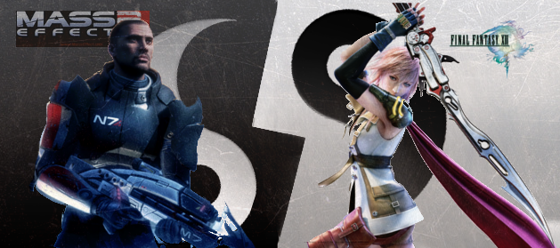

RPG's: Oriente x Ocidente(){
Games
Por: Diego Elias

No ano de lançamento de duas super produções dos games - a continuação do inovador e aclamado "Mass Effect" e o tão aguardado e ovacionado pelos fãs, "Final Fantasy XIII" - decidimos fazer uma matéria que abordasse um assunto polêmico e amplamente discutido entre os fãs de RPG's no mundo virtual: RPG’s Orientais versus RPG’s Ocidentais.
Brincadeira de gente grande
Primeiramente, RPG (Role Playing Game) significa jogo de interpretação de papéis. Um jogo no qual você interpreta um personagem em um mundo fantasioso, imerso em um enredo fictício em busca de certos objetivos. Em outras palavras, lembra de quando você era criança, e brincava com seus amigos fingindo serem heróis, cowboys, astronautas e derrotavam monstros imaginários e conseguia recompensas? Junte isso a um sistema de regras bem definido e você tem um autêntico jogo de RPG.
Parece brincadeira de criança, mas o mercado de RPG para consoles e computadores é um dos que mais cresce e fatura no mundo dos games. Segundo a revista Develop, no ano de 2008, somente o "World of Warcraft", um RPG online para múltiplos jogadores, acrescentou ao faturamento da Blizzard mais de US$1,3 bilhões e possui hoje um número de jogadores superior a 10 milhões. A Empresa Square-Enix, especializada em jogos de RPG, faturou cerca de US$2 bilhões no ano passado. Só o "Final Fantasy XIII" já ultrapassou a marca de 1,5 milhões de cópias vendidas no Japão na semana de seu lançamento, impulsionando a venda do PS3 em 215% por lá, segundo o G1.
Nos RPG virtuais, a ideia de um jogo de interpretação é de fato bem mais limitada. Nos games, os jogos de RPG são caracterizados por um foco maior na história e um sistema de evolução dos personagens através do aprimoramento de suas características pela experiência. De fato, essas duas características estão presentes em vários outros estilos de jogos atualmente, mesclando o gênero antes tido como RPG a jogos de ação, suspense e outros.
A partir dessa definição, temos dois subgêneros do RPG, que se diferem bastante e dividem opiniões: os RPG’s Ocidentais, encabeçados pela BioWare, Bethesda e Activision Blizzards; e os RPG’s Orientais, encabeçados pelas empresas Square-Enix, Namco e Nintendo.
Referências:
}